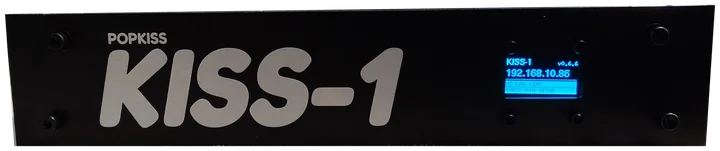

HARDWARETALLY / GPIO開発中IN DEVELOPMENT

KISS-1 TALLY / GPIO INTERFACE
DB25 の全ピンを、入力・出力・COM・GND・5V に自由に割り当てられるタリー / GPIO インターフェイスです。スイッチャーや TSL 5.0 からタリーを受けて接点で出したり、接点入力を TSL 5.0 で送ったりできます。
A tally / GPIO interface whose DB25 pins can each be set as input, output, COM, GND or 5 V. It takes tally from a switcher or TSL 5.0 and drives contacts, or sends contact inputs out as TSL 5.0.
- ブラウザから設定、プリセットも保存可能
- 受けたタリーを TSL 5.0 で送信
- 2台以上で、LAN 越しに接点を延長
- 本体で動くスクリプトで、独自の動きを追加
- ESP32 なので、自作ファームも自由に書き込める
- Set up from a web browser, with presets
- Sends the tally out as TSL 5.0
- Extend contacts over the LAN with two or more units
- Add your own behavior with scripts that run on the unit
- Runs on an ESP32 — flash your own firmware freely
WEB APPTIMECODE
SMPTE TC GENERATOR TIME OF DAY
ブラウザで動く SMPTE タイムコードジェネレーターです。ネットの正確な時刻に合わせて、選んだ地域の時刻（Time of Day）からタイムコードを出します。スレートや時刻合わせなどに使えます。インストールはいりません。
A SMPTE timecode generator that runs in your browser. It syncs to accurate internet time and generates time-of-day timecode for the region you choose. Handy for slates and setting clocks. Nothing to install.
- 23.98 / 24 / 29.97 / 30 / 59.94 / 60 fps、DF / NDF
- LTC を音声で出力（レベル調整つき）
- 全画面表示・画面を消さない設定
- 推定誤差・RTT の表示、10分ごとの自動再同期
- 23.98 / 24 / 29.97 / 30 / 59.94 / 60 fps, DF / NDF
- LTC audio output with level control
- Fullscreen view and keep-screen-awake option
- Shows estimated error and RTT, auto-resync every 10 minutes